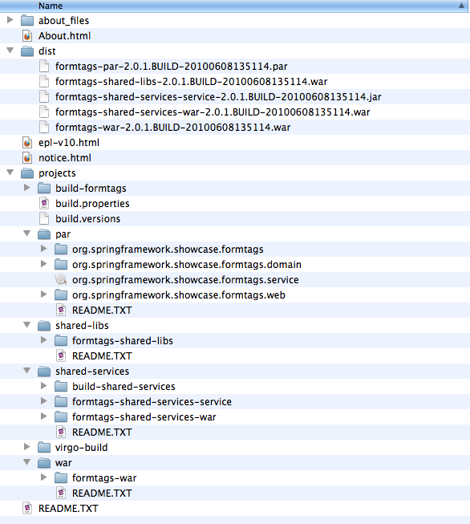

Table of Contents
In this chapter we will walk through the steps needed to migrate the Form Tags sample application from a standard Java EE WAR to a fully OSGi compliant Shared Services WAR within a PAR. The migration involves four packaging and deployment formats:
Each of these migration steps will produce a web application that can be deployed and run on the VTS.
After summarising the process, an example
plan
is shown which is another way of
packaging and deploying the application.
The following image displays the directory structure you should have
after installing the Form Tags sample. Note however that the release
tag
will typically resemble
3.0.0.RELEASE
.

The
dist
directory contains the distributables,
and the
projects
directory contains the source code
and build scripts.
For simplicity, this chapter will focus on the distributables???which are built using Virgo-Build rather than on configuring a project in an IDE.
dist
directory;
however, if you would like to modify the samples or build
them from scratch, you may
do so using Virgo-Build. Take a look at
the
README.TXT
file in each of the folders under
the
projects
directory in the
Form Tags sample for instructions.
The sample that we will be using is the Form Tags show case sample which was provided with Spring 2.0. The Form Tags application has been removed from the official Spring 2.5.x distributions; however, since it is relatively simple but still contains enough ingredients to demonstrate the various considerations required during a migration, we have chosen to use it for these examples.
The purpose of the Form Tags show case sample was to demonstrate how
the Spring specific
form:
tags, released
in Spring 2.0, make view development with JSPs and tag
libraries easier.
The Form Tags application consists of a single
UserService
which returns a list
of
Users
. Furthermore, the application demonstrates how to list, view,
and
edit
Users
in a simple Spring MVC based web application using JSP
and JSTL.